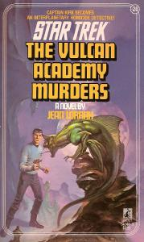

The Vulcan Academy Murders |
|
||||||
|  |
| AUT | Jean Lorrah |
| PAG | 280 |
| EDI | Pocket Books, 1984 (prima edizione) |
| ISBN | 0-671-64744-X (prima edizione) 0-671-50054-6 0-671-74283-3 |
Mentre Kirk, Spock e McCoy si trovano su
Vulcano alla ricerca di cure sperimentali per un uomo dell'equipaggio
gravemente ferito, rimangono coinvolti in una serie di omicidi, di cui la madre
di Spock è una delle vittime.